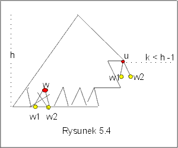

| « poprzedni punkt | nastêpny punkt » |
W tym punkcie zbadamy ograniczenie dolne na liczbê porównañ wykonywanych w procesie sortowania, w przypadku ¶rednim. Zadanie polega na zbadaniu ¶redniej d³ugo¶ci ¶cie¿ki w drzewie decyzyjnym dla algorytmów sortuj±cych przez porównywanie elementów.
Niech D bêdzie drzewem binarnym, L zbiorem jego li¶ci, a p(v) - d³ugo¶ci± ¶cie¿ki od korzenia do li¶cia v w drzewie D. Przyjmijmy te¿ nastêpuj±ce oznaczenie:
epl(D) = SvÎL p(v),
epl(D) jest po prostu sum± d³ugo¶ci wszystkich ¶cie¿ek od korzenia do li¶ci w drzewie D.
Lemat 2.1 Je¿eli dla pewnego D warto¶æ epl(D) jest najmniejsza w¶ród drzew binarnych lokalnie pe³nych o n li¶ciach, to wszystkie li¶cie tego drzewa D znajduj± siê na dwóch ostatnich poziomach.
Dowód lematu 2.1
Za³ó¿my przeciwnie, ¿e w drzewie Dn o n li¶ciach i wysoko¶ci h, istnieje li¶æ u na poziomie k, k £ h-2, a mimo to warto¶æ epl(Dn) jest minimalna w¶ród wszystkich drzew binarnych lokalnie pe³nych o n li¶ciach (por. Rysunek 5.4).
Niech w bêdzie wierzcho³kiem na poziomie h-1, a w1 i w2 niech bêd± jego nastêpnikami. Co najmniej jeden taki wierzcho³ek istnieje, bo drzewo D ma wysoko¶æ h. Zbudujemy nowe drzewo D* przenosz±c li¶cie w1, w2 z ostatniego poziomu i dowi±zuj±c je jako synów wierzcho³ka u.
Taka modyfikacja nie zmieni³a liczby li¶ci w drzewie, zatem D* ma te¿ n li¶ci i jest drzewem lokalnie pe³nym. Mamy
epl(D*) = epl(Dn) -2h +(h-1) - k + 2(k+1),
poniewa¿ w jest w D* li¶ciem, a u nie jest, oraz w1, w2 znajduj± siê teraz nie na poziomie h, a na poziomie k+1. St±d
epl(D*) = epl(Dn) + (k- (h-1)).
Poniewa¿ z za³o¿enia k < h-1, zatem epl(D*) < epl(Dn). Otrzymali¶my sprzeczno¶æ, która dowodzi prawdziwo¶ci lematu 2.1. J
Jaka jest warto¶æ sumy d³ugo¶ci ¶cie¿ek w lokalnie pe³nym drzewie binarnym o n li¶ciach? Je¶li D jest to pe³nym drzewem binarnym, to wszystkie ¶cie¿ki maj± tak± sam± d³ugo¶æ, równ± lg n, a wtedy epl(D)= n´lg n. W dalszym ci±gu rozwa¿ymy dowolne drzewa rodziny D(n) drzew binarnych, lokalnie pe³nych, o n li¶ciach. Udowodnimy nastêpuj±ce ograniczenie dolne warto¶ci epl dla drzew tej rodziny.
Lemat 2.2 min{epl(D): DÎ D(n)} = n ëlg nû + 2( n - 2 ëlg nû).
Dowód lematu 2.2.
Niech D bêdzie drzewem z rodziny D(n), oraz niech warto¶æ funkcji epl dla tego drzewa osi±ga minimum. Na mocy lematu 2.1 wiemy, ¿e wszystkie li¶cie w tym drzewie znajduj± siê na dwóch ostatnich poziomach. Rozwa¿my dwa przypadki.
1. n= 2p dla pewnego p. Wtedy mamy do czynienia z pe³nym drzewem binarnym, wszystkie li¶cie znajduj± siê na poziomie p i oczywi¶cie epl(D)= n lg n = n ëlg nû + 2( n - 2 ëlg nû). Zatem w tym przypadku lemat 2.2 jest prawdziwy.
2. 2p-1 < n < 2p, dla pewnego p. Na mocy lematu 1.1, h ³ élg nù. Gdyby jednak h > élg nù, to licz±c liczbê li¶ci w tym drzewie przy za³o¿eniu, ¿e na przedostatnim poziomie jest y nie-li¶ci, otrzymaliby¶my sprzeczno¶æ z za³o¿eniem:
n = (2 h-1 - y) + 2y = 2 h-1 + y > 2élg nù = 2p > n,
((2 h-1 - y)- to li¶cie na przedostatnim poziomie, a 2y - to li¶cie na ostatnim poziomie). Zatem, dla drzewa D w rozwa¿anym przypadku musi byæ h = élg nù. Policzmy warto¶æ funkcji epl(D):
epl(D) = 2y ´ h + (2 h-1 - y)´(h-1) .
Poniewa¿ n = 2y + (2 h-1 - y) , to y = n - 2 h-1 . St±d , bior±c pod uwagê równo¶æ ëlg nû +1 = élg nù, otrzymujemy:
epl(D) = h ´ n - 2h + n = n élg nù - 2 élg nù + n = n ëlg nû + 2( n - 2 ëlg nû). J
Lemat 2.3 ¦rednia liczba porównañ wykonanych przez dowolny algorytm Alg sortuj±cy ci±g n elementowy przez porównania, jest nie mniejsza ni¿ ëlg n!û, A(Alg, n) ³ ëlg n!û.
Dowód lematu 2.3.
¦rednia wysoko¶æ h drzewa decyzyjnego wynosi, na mocy lematu 2.2, co najmniej
(1/n!) (n! ëlg n!û + 2( n! - 2 ëlg n!û).
Poniewa¿ dla dowolnego x, x/2 £ 2 ëlg xû £ x, zatem (2 ëlg xû / x) £ 1, a co za tym idzie 2(n! - 2 ëlg n!û)/ n! ³ 0. Ostatecznie
(1/n!) (n! ëlg n!û + 2( n! - 2 ëlg n!û) ³ ëlg n!û.
Zakoñczyli¶my w ten sposób dowód lematu 2.3. J
Twierdzenie 2.1 Dolne ograniczenie z³o¿ono¶ci algorytmów sortowania przez porównywanie elementów wynosi w przypadku ¶rednim Q(n´lg n).
Wniosek: Algorytm QuickSort jest asymptotycznie optymalnym algorytmem sortowania ze wzglêdu na ¶redni± z³o¿ono¶æ czasow±.
Pytanie 3: Czy MergeSort jest algorytmem asymptotycznie optymalnym ze wzglêdu na ¶redni± z³o¿ono¶æ czasow±?
| « poprzedni punkt | nastêpny punkt » |